和
和3．牛顿的工作
数学和科学中的巨大进展，几乎总是建立在几百年中作出一点一滴贡献的许多人的工作之上的。需要有一个人来走那最高和最后的一步，这个人要能足够敏锐地从纷乱的猜测和说明中清理出前人有价值的想法，有足够想象力地把这些碎片重新组织起来，并且足够大胆地制定一个宏伟的计划。在微积分中，这个人就是牛顿。
牛顿（1642—1727）生于英格兰伍尔斯索普（Woolsthorpe）的一个小村庄里，他的母亲在那里管理着丈夫遗留下来的农庄，他父亲是在他出生前两个月去世的。他在低标准的地方学校中接受教育，而且是一个除了对机械设计有兴趣以外没有特殊才华的青年人。他考取了大学，但他的欧几里得几何的答卷是有缺陷的。1661年他进入剑桥大学的三一学院，安静而没有阻力地学习着。有一次，他几乎要改变方向，从学自然哲学（即科学）转到学法律。显然，可能除了巴罗以外，他从他的老师那里得到了很少一点鼓舞，他自己作实验并且研究笛卡儿的《几何》，以及哥白尼、开普勒、伽利略、沃利斯和巴罗的著作。
牛顿刚结束了他的大学课程，学校就因为伦敦地区鼠疫流行而关闭。他离开剑桥，在安静的伍尔斯索普的家乡度过了1665年和1666年。在那里开始了他在机械、数学和光学上的伟大工作。这时他意识到引力的平方反比定律——这个概念早已有人提出过，包括开普勒在内，可以回溯到1612年——这是打开那无所不包的力学科学的钥匙。他获得了解决微积分问题的一般方法；并且通过光学的实验，他作出了划时代的发现，即像太阳光那样的白光实际上是从紫到红的各种颜色光混合而成的。“所有这些”，牛顿后来说：“是在1665年和1666年两个鼠疫年中做的，因为在这些日子里，我正处在发现力最盛的时期，而且对于数学和哲学（自然科学）的关心比其他任何时候都多。”
关于这些发现，牛顿什么也没有说过。1667年他回到剑桥获得硕士学位，并被选为三一学院的研究员。1669年巴罗辞去他的教授席位，牛顿被委任接替巴罗担任卢卡斯数学教授。显然，他不是一个成功的教员，因为听他的课的学生很少；他提出的独创性的材料没有受到同事们的注意。只有巴罗，稍后一些还有天文学家哈雷（1656—1742），认识到他的伟大，并给他以鼓励。
起初牛顿并没有公布他的发现。人们说他有一种变态的害怕批评的心理。德摩根说是“一种病态的害怕别人反对的心理统治了他的一生”。1672年他确实也发表了他的光学论文并附带发表了他的自然哲学思想的作品，遭到了同时代大多数人的严厉批评，包括胡克和惠更斯在内，他们对于光的本性持有不同的看法。牛顿吃了一惊，决心以后再不发表了。但是1675年他又发表了另一篇光学论文，其中包括光是质点流的想法——光的粒子学说。他再一次遭到了暴风雨般的批评，甚至有人声称他们已经发现了这些思想。这次牛顿决心死后才公开他的成果。然而，他还是发表了后来的论文及几本著名的书：《原理》、《光学》（Opticks，1704年英文版，1706年拉丁文版）和《普遍的算术》（1707）。
从1665年起他把引力定律应用于行星的运动，在这方面，胡克和惠更斯的著作极大地影响了他。1684年他的朋友哈雷力劝他发表已取得的成果，但是除了因为不愿意外，牛顿还没有证明一个实心球体所作用的引力恰好等于球心处一个质点所产生的引力，这个质点上集中了球的全部质量。1686年6月20日在给哈雷的信中他说，直到1685年他仍然怀疑这是错的。在这一年中他证明了一个实心球，它的密度随着到球心的距离而变化，在吸引一个外部质点时，实际上就好像球的质量集中在它的中心一样。并且同意写出他的著作。
这时哈雷协助牛顿编辑并且出资付印。1687年《自然哲学的数学原理》第一版出版了。以后的两个版本是在1713年和1726年，第二版包括了一些改进。虽然这本书给牛顿带来巨大的名望，但它很难懂。他告诉朋友说，他有意使它难懂，“目的是为了避免遭到数学知识浅薄的人的抑制”。毫无疑问，他希望这样可以避免他早期的光学论文所曾遭到的批评。
牛顿也是一个大化学家。虽然在这个领域里没有什么大的发现联系到他的工作，但是必须记住，那时化学正处在婴儿时期。他有试图用最终的微粒解释化学现象的正确想法，而且还有广博的实验化学知识。在这门学科中，他写了一篇重要论文《酸的性质》（写于1692年，发表于1710年）。在1701年的皇家学会哲学汇刊上他发表了一篇关于热的论文，其中包括他的著名的冷却定律。虽然他读了炼金术士的书，但并没有接受他们模糊的和神秘的观点。他相信，物体的物理性质和化学性质可以用最终的微粒的大小、形状和运动来说明。他排除了炼金术士的神秘的力，诸如同情、厌恶、和谐、诱惑等。
除了天体力学、光学和化学的工作以外，牛顿还研究了流体静力学和流体动力学。在他的超等的光学实验工作之后，他又实验了钟摆运动在各种介质中的衰减，以及作了球在空气和水中下落、水从喷嘴里喷出的实验。他和当时的大多数人一样，自己制造实验装置。他造了两个反射望远镜，甚至于制造出做架子用的合金、浇铸框架，做底座、磨光镜头。
在当了35年教授之后，牛顿成为沮丧的、痛苦的神经衰竭者。他决定放弃研究，并于1695年接受任命，担任伦敦的不列颠造币厂监察。在造币厂的27年中，除了关于个别问题的工作以外，他没有进行研究。1703年他成为皇家学会会长，一直到逝世；1705年他被授予爵士的称号。
很明显，牛顿对于科学的兴趣要比对于数学的兴趣大得多，而且还是一个研究当代问题的积极参加者。他认为，他的科学工作的主要价值在于它支持天启教（即由上帝直接启示于人的宗教。——译者）。他虽然不是牧师，但实际上他是一个博学的神学家。他认为科学研究虽然是艰苦而又枯燥的，但要坚持，因为它给上帝的创造提出证据。像他的前辈巴罗一样，晚年牛顿转向神学的研究。在《修改的古代王国年表》（The Chronology of Ancient Kingdoms Amended）中，他想把圣经和宗教文件上记载的事件和天文事件联系起来，从而精确地注明这些事件的日子。他的主要宗教著作是《对于丹尼尔的预言和圣约翰的启示录的观察》（Observations Upon the Prophecies of Daniel and the Apocalypse of St．John）。圣经的注释是对宗教作理性探讨的一个方面，这种探讨在理性时代是很流行的，莱布尼茨也参加了这种探讨。
关于微积分，牛顿总结了已经由许多人发展了的思想，建立起成熟的方法，并且提出了前面叙述的几个主要问题之间的内在联系。虽然他在学生时期向巴罗学了很多，但在代数和微积分方面，他更受沃利斯的影响。他说《无穷的算术》引导他在分析中有所发现，确实，在他的微积分著作中，他是通过分析的思想前进的。但是，甚至牛顿自己也认为，对于严密的证明，几何是必需的。
1669年牛顿在他的朋友中散发了题为《运用无穷多项方程的分析学》（De Analysi per Aequationes Numero Terminorum Infinitas）的小册子，这本书直到1711年才出版。他假定有一条曲线而且曲线下的面积z（图17.13）已知是
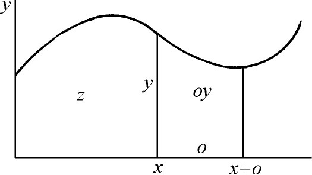
图17.13
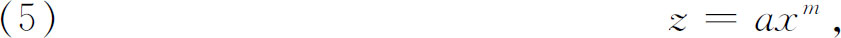
其中m是整数或者分数。他把x的无限小的增量叫做x的瞬（moment），并用o表示，这是詹姆斯·格雷戈里用的符号，相当于费马的符号E。由曲线、x轴、y轴和x＋o处的纵坐标围成的面积，他用z＋oy表示，其中oy是面积的瞬。那么
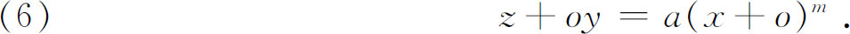
运用二项式定理于右边，当m是分数时，得到一个无穷级数，从（6）减去（5），用o除方程的两边，略去仍然含有o的项，就得到
y＝maxm-1．
因此，用我们的话来讲就是，面积在任意x点的变化率是曲线在x处的y值。反过来，如果曲线是y＝maxm-1，那么在它下面的面积就是z＝axm。
在这里，牛顿不仅给出了求一个变量对于另一个变量（在上面的例子中是z对x）的瞬时变化率的普遍方法，而且证明了面积可以由求变化率的逆过程得到。因为面积也是用无穷小面积的和来表示从而获得的，所以牛顿证明了这样的和能由求变化率的逆过程得到。和（更精确些说，和的极限）能够由反微分得到，这个事实就是我们现在所叫的微积分基本定理。虽然牛顿的先驱者在特殊的例子中知道了并且也模糊地预见到了这个事实，但是牛顿看出它是普遍的。他应用这个方法得到了许多曲线下的面积，并且解决了其他能够表示成和式的问题。
在证明了面积的导数是y值，并断言逆程序是正确的以后，牛顿给出了法则：如果y值是若干项的和，那么面积就是由每一项得到的面积的和。用现在的话来说，就是函数之和的不定积分是各个函数的积分之和。
他在这篇专题文章中的又一个贡献，是更进一步运用他的无穷级数。为了积分y＝a2/（b＋x），他用b＋x除a2得到
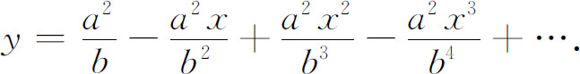
他把这个无穷级数逐项积分，求出了面积
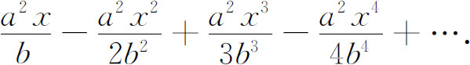
对于这个无穷级数，他说只要b是x的倍数，对于任何用途，取最初几项就足够了。
同样地，为了积分y＝1/（1＋x2），他用二项式展开，写成
y＝1-x2＋x4-x6＋x8-…，
并且逐项积分。他注意到，如果把y取成1/（x2＋1）的话，那么由二项式展开将得到
y＝x-2-x-4＋x-6-x-8＋…，
而且现在也能逐项积分。随后他说，当x相当小时，应该用第一个展开式；但当x大时，必须用第二个展开式。因此他稍微有些意识到我们现在叫做收敛性的重要，但是还没有关于它的明确概念。
牛顿意识到他已经把逐项积分扩展到用于无穷级数，但在《分析学》（De Analysi）中，他说：
任何事情，只要是普通分析能够通过有限多项的方程去做的，也能够通过无限多项的方程去做，这就使我没有问题地把这后一种也叫做分析。因为后一种推理的正确性不少于前一种，后一种方程的正确性也不少于前一种；不过，我们这些凡人的推理力量是局限在狭窄的范围内的，所以既不能表达出也无法去想象方程的一切项，使得能够从中确知所求的量。
到此为止，牛顿对微积分的探讨用了可以说是无穷小的方法。瞬是无限小的量、不可分的量、或者是微元。当然牛顿这样做在逻辑上是不清楚的。在这本书中他说他的方法“与其说是精确的证明，不如说是简短的说明”。
在写于1671年但直到1736年才出版的书《流数法和无穷级数》（Methodus Fluxionum et Serierum Infinitarum）中，牛顿给他的思想作出了第二种更广泛而且更明确的说明。在这本书中，他说他认为变量是由点、线和面的连续运动产生的，而不是他在早期论文中所说的无穷小元素的静止的集合。他现在把变量叫做流量（fluent），变量的变化率叫做流数（fluxion）。对于流量x和y的流数，他记为和
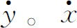
的流数是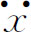
等。流数为x的流量是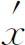
，后者的流量是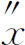
。在这第二本书中，牛顿更清楚地陈述了微积分的基本问题：已知两个流之间的关系，求它们的流数之间的关系，以及它的逆问题。由已知关系给定的两个变量，能够表示任何量。但是牛顿认为它们是随时间变化的，因为这是一种有用的虽然不是必需的思想方法。因为如果o是“无穷小的时间间隔”，那么
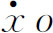
和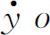
就是x和y的无穷小增量，或者说是x和y的瞬。例如，假定流量是y＝xn，为求出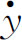
和 之间的联系，牛顿首先建立
之间的联系，牛顿首先建立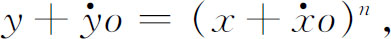
然后按早期论文中说的那样去做。他用二项式定理展开右边，消去y＝xn，用o除两边，略去所有仍然含有o的项，得到
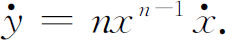
用现在的记号，这个结果可以写成
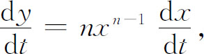
而且因为dy/dx＝（dy/dt）/（dx/dt），所以牛顿在求出dy/dt对dx/dt，或者说
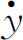
对 的比中，已经求出了dy/dx。
的比中，已经求出了dy/dx。流数法同《分析》中使用的方法并无本质区别，也没有任何好一点的严密性，牛顿扔掉
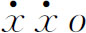
和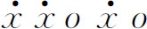
（他写成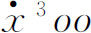
）那样的项，根据是它们同剩余下来的项相比是无穷小。但是他在《流数法》中的观点毕竟是有些不同了。瞬 和
和 是随时间o变化的，而在第一篇论文中的瞬是x和z的最后的固定的一小片。这个新观点是遵循着伽利略的更富有动力学思想的想法；而旧的观点是运用卡瓦列里的静力学不可分法。正如牛顿指出的，这个改动只是为了从不可分法的学说中排除生涩，但是瞬
是随时间o变化的，而在第一篇论文中的瞬是x和z的最后的固定的一小片。这个新观点是遵循着伽利略的更富有动力学思想的想法；而旧的观点是运用卡瓦列里的静力学不可分法。正如牛顿指出的，这个改动只是为了从不可分法的学说中排除生涩，但是瞬 和
和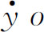
仍然是某种无穷小量。另外，x和y的对于时间的流数或者导数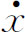
和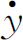
从来没有真正定义过，这个中心问题是避开了的。已知 和
和 之间的关系，要求出x和y之间的关系，比之仅仅积分x的函数更困难些。牛顿处理了几种类型的问题：（1）有
之间的关系，要求出x和y之间的关系，比之仅仅积分x的函数更困难些。牛顿处理了几种类型的问题：（1）有
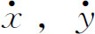
，还有x或y出现；（2）有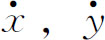
，x和y出现；（3）有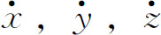
和它们的流量出现。第一类是最简单的，在现在的记法中，要求解dy/dx＝f（x）。在第二类中，牛顿处理了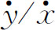
＝1-3x＋y＋x2＋xy，而且是用逐步逼近法去解的。他从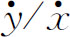
＝1-3x＋x2作为第一近似出发，得到作为x的函数的y，将这个y值代入原等式的右边，并继续这一手续。牛顿叙述了他的做法，但没有证明。在第三类中，他解了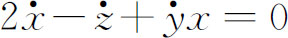
。他假定了x和y之间的一个关系式，比如说x＝y2，于是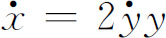
。这样，方程就成为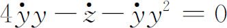
，从此得到2y2＋（y3/3）＝z。所以如果把第三种类型认为是偏微分方程，那么牛顿只得到了一个特殊积分。牛顿意识到在这篇论文中他已提出了一个普遍的方法。他在1672年12月10日写给柯林斯的信中，给出了他的方法的真相和一个例子，他说：
这是普遍方法的一个特殊方法，或者更确切地，一个推理，它本身用不着任何麻烦的计算，不仅可以用来作出任何曲线的切线（不管这曲线是几何的还是机械的），而且还可以用来解出其他关于曲度、面积、曲线的长度、重心等深奥问题；它的应用并不限于没有无理根的方程。通过把方程化为无穷级数，我把这个方法和在方程中起作用的其他方法紧密结合起来。
牛顿强调无穷级数的用处，因为用它能处理像（1＋x）3/2一类的函数，相反，他的前人却完全限制在有理代数函数方面。
在写于1676年、发表于1704年的第三篇微积分论文《求曲边形的面积》（Tractatus de Quadratura Curvarum）中，牛顿说他已放弃了微元或无穷小量。他现在批评扔掉含o项的做法，因为他说：
在数学中，最微小的误差也不能忽略……在这里，我认为数学的量并不是由非常小的部分组成的，而是用连续的运动来描述的。直线不是一部分一部分地连接，而是由点的连续运动画出的，因而是这样生成的；面是由线的运动，体是由面的运动，角是由边的旋转，时间段落是由连续的流动生成的……
随我们的意愿，流数可以任意地接近于在尽可能小的等间隔时段中产生的流量的增量，精确地说，它们是最初增量的最初的比，它们也能用和它们成比例的任何线段来表示。
这就是牛顿的新概念——最初和最后比的方法。他考虑函数y＝xn。为了求出y或者xn的流数，设x“由流动（by flowing）”成为x＋o。xn就成为
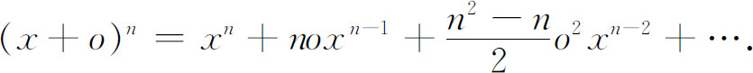
x和y的增量的比，即o和
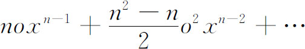
的比，等于（都用o来除）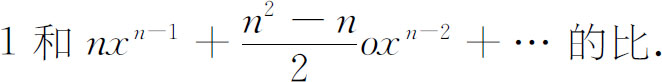
“现在设增量消失，它们的最后比就是”
1比nxn-1．
因此x的流数和xn的流数的比就等于1比nxn-1，或者如我们今天说的，y对于x的变化率是nxn-1，这是最初增量的最初比。当然，这种说法的逻辑性并不比前面的两种好；然而牛顿说这个方法与古代的几何是融洽的而且没有必要引进无穷小量。
牛顿还给出了几何的解释。在图17.14中，假定bc移向BC，使得c和C重合。那么曲边三角形CEc以“最后的形式”和三角形CET相似，因此它的“即将消失的”各边将和CE，ET和CT成比例。所以AB，BC和AC的流数在它们消失的增量的最后比中，和三角形CET或者三角形VBC的边成比例。
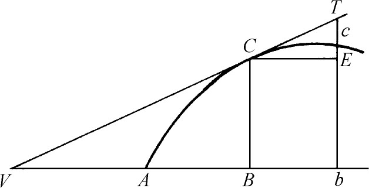
图17.14
在《流数法》中，牛顿作了一些应用，用流数法微分隐函数，求曲线的切线、函数的最大值与最小值、曲线的曲率和曲线的拐点。他也得到了曲线下的面积和曲线的长度。关于曲率，他给出曲率半径的正确公式，即
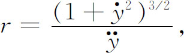
其中
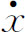
取作1。他还给出极坐标中的曲率半径的公式。最后，他附了一个积分简表。在写完微积分的基本论文以后，过了很长时间，牛顿才发表这些论文。他的流数理论最早发表在沃利斯的《代数》（Algebra，1693年，拉丁文第二版）中，牛顿写了书的第390至396页。如果当初他写出来就发表的话，也许可以避免与莱布尼茨发生谁先发现的争论。
牛顿的第一本包括他的微积分的书是他的巨著《自然哲学的数学原理》(8)。只要涉及微积分的基本概念，即流数或者我们说的导数，牛顿就作出几种陈述，他舍弃了无穷小量或者最后的不可分量而用了“消失的可分量”，即能够无穷地缩小的量。在《原理》的第一版和第三版中，牛顿说：“量在其中消失的最后比，严格说来，不是最后量的比，而是无限减少的这些量的比所趋近的极限，而它与这个极限之差虽然能比任何给出的差更小，但是在这些量无限缩小以前既不能越过也不能达到这个极限。”(9)这是他曾经给过的作为最后比的意思最清楚的说明。关于前面的引文，他还说：“最后速度的意思是，它既不是在物体达到最后位置（在该处假定物体停止）之前的速度，也不是在达到以后的速度，而是正达到的那瞬间的速度……因此，同样的，就消失量的最后比来说，应理解为不是在量消失以前，也不是在消失以后，而是正当它们消失时的比。”
在《原理》中牛顿用了几何的证明方法。然而在包含有他的未出版的著作的名叫《朴次茅斯论文集》（Portsmouth Papers）中，他用分析的方法找出了一些定理。这些论文说明除了能归结到几何的以外，他也分析地获得了一些结果。他诉诸几何的一个原因是相信证明将更能被他的同时代人理解。另外一个原因是他非常赞赏惠更斯的几何著作并希望和它并列。在这些几何证明中，牛顿用了微积分的基本的极限过程。因此，正如今天的微积分所做的那样，曲线下的面积本质上被认为是近似矩形的和的极限。但是，他用了这个概念去比较不同的曲线下的面积，而没有计算这样的面积。
他证明当AR和BR（图17.15）垂直于弧ACB在A点和B点的切线时，弦AB、弧ACB和AD这三个量中任意两个的最后比，当B接近于A并和A重合时，都等于1。因此他在书的第一卷的引理2的系3中说：“因此在关于最后比的所有推论中，我们可以用这些线中的任意一个随意代替另一个。”然后他证明，当B接近并重合于A时，三角形RAB，RACB，RAD中任意两个的面积之比将等于1。“因此，在关于最后比的所有推论中，我们可用这些三角形中的任意一个代替另一个。”同样的，设BD和CE（图17.16）垂直于AE（它不必是弧ABC在A点的切线）。当B和C接近A并和A重合时，ACE和ABD的面积的最后比将等于AE2和AD2的最后比。
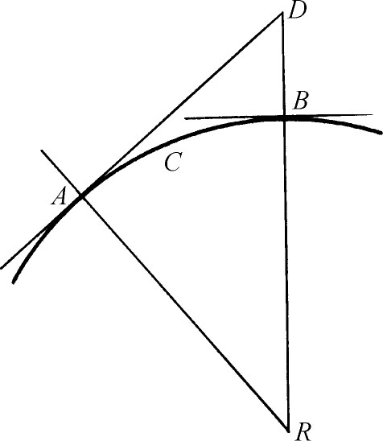 | 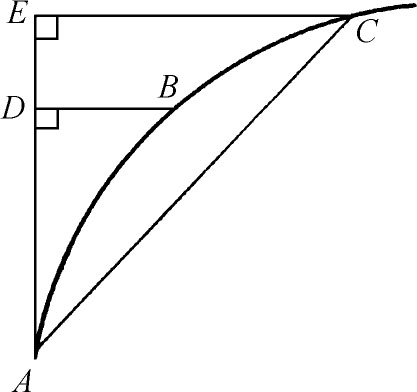 |
| 图17.15 | 图17.16 |
《原理》包含丰富的成果，其中的一些我们将要提到。虽然这本书是研究天体力学的，但是对于数学史也有极大的重要性，这不仅因为牛顿自己在微积分方面的工作，大部分是由他对书中处理的问题的压倒一切的兴趣激发的，而且还因为《原理》对许多问题提出了新的课题和研究方式，而这些问题经过下一个世纪的研究，产生出大量的分析成果。
《原理》分成三卷(10)。在引言性章节中牛顿定义了诸如惯量、动量和力等力学概念，然后叙述了三条著名的运动学公理或定律。在他的书中是这样说的：
定律Ⅰ．每一个物体保持它原来的静止状态或匀速直线运动状态不变，除非由作用于它的力迫使它改变这种状态。
定律Ⅱ．运动的（量的）改变与施加的动力成正比，而且是朝着力所作用的直线方向改变。
牛顿所谓的动量，正如他先前曾说明过的，等于质量乘上速度。因此，如果质量是常数，那么动量的变化就是速度的变化，即加速度。当力的单位是磅达，质量的单位是磅，加速度的单位是英尺/秒2时，第二定律现在通常写成F＝ma。牛顿第二定律实际上是矢量的叙述，这就是如果力是由三个互相垂直的方向上的分力合成的，那么每一个分量在它自己的方向上引起一个加速度。牛顿在特殊的问题中用了力的矢量特性，但是定律的矢量本质的全部意义首先是由欧拉充分认识的。这个定律具体化了对亚里士多德力学的关键性的改革，亚里士多德断言力引起速度。他还断言，力对于维持速度是必需的。定律Ⅰ否定了这一点。
定律Ⅲ．每一个作用总是引起一个相等的反作用。
我们不去深究力学的历史，只是指出前两个定律是先前由伽利略和笛卡儿发现并提出、而由牛顿给以更明确和更概括的叙述的。在质量（即一个物体对于它在运动中的变化的抵抗）和重量（即作用在任何物体质量上的引力）之间的差别，也归功于这些人。力的向量特性推广了伽利略的原则：抛射体的竖直方向和水平方向的运动能够分开来处理。
《原理》的第一卷以一些微积分的定理开始，包括上面引到的关于最后比的一些定理。然后讨论了中心力作用下的运动，这个力总是把运动物体引向一个固定点（实际上就是太阳），并且证明了命题1：在相等的时间内扫出相等的面积（这包含了开普勒的面积定律）。接着，牛顿考虑了一个沿着圆锥曲线运动的物体，并且证明（命题11，12和13）：力必定是随着到某个定点的距离的平方的反比变化的。他还证明了逆定理，这包含开普勒的第一定律。在作了向心力的论述之后，他推出了开普勒第三定律（命题15）。接着的两节是研究圆锥曲线性质的。主要的问题是构造满足五种已知条件的二次曲线，这些条件实际上是平常观察的数据。这样，已知一个物体沿着圆锥曲线运动的时间，他求出了它的速度和位置。他着手于拱点线（apse line）的运动，即连接（在一个焦点上的）引力的中心和沿着一条本身以某种速度绕焦点旋转的圆锥曲线移动的物体的最大或最小距离位置的直线。第10节参考特殊的单摆运动来研究物体沿着表面的运动。这里牛顿给惠更斯以应有的感谢。联系到重力在运动中的加速作用，他研究了摆线、圆外旋轮线、四尖圆内旋轮线的几何性质，并给出圆外旋轮线的长度（命题49）。
第11节中牛顿从运动定律和引力定律推断出两个物体的运动法则，这两个物体按照引力彼此吸引。它们的运动归结为一个物体围绕着固定的第二个物体的运动。这个运动的物体是沿着椭圆移动的。
然后他考虑均匀密度和变化密度的球体以及球型物体对一个质点的吸引力。他给出一个几何证明（第12节命题70），证明一个薄的匀质球壳对它内部的质点没有吸引力。因为这个结论对薄壳成立，所以对于这样的薄壳的和，即对于一定厚度的壳也成立。（他后来证明命题91系3，对于均匀的椭球壳，即包含在同样放置的两个相似的椭球面之间的壳，这个结论也成立。）命题71证明一个薄的均匀球壳对外部质量的吸引力，等于球壳的质量集中在中心时产生的吸引力，所以球壳吸引外部质点的力是向着它的中心的，这个力与离开中心的距离的平方成反比。命题73证明一个均匀的实心球体，吸引内部质点的力与质点离开球心的距离成比例。至于球体对外部质点的吸引力，命题74证明它与球的质量集中在中心时产生的吸引力是相同的。据此，如果两个球互相吸引，第一个球对第二个球的每一个质点的吸引力就好像第一个球的质量集中在它的中心时产生的吸引力一样。这样，第一个球就成为被第二个球的离散质量吸引的质点；所以第二个球也可以当作质量集中在中心的一个质点。因此两个球都可以作为质量分别集中在中心的质点。所有这些由牛顿首创的结论，都推广到密度是球对称的球体，以及不同于平方反比定律的其他引力定律。
接着，牛顿着手处理三体运动，这三体的每一个吸引其他两个，得到一些近似的结果。三体运动问题成为牛顿以来的一个主要问题，至今还未解决。
《原理》的第二卷是研究物体在气体和液体那样有阻力的介质中的运动，这是流体动力学的开端。牛顿在一些问题中假定介质的阻力与运动物体的速度成比例，在另一些问题中假定与运动物体速度的平方成比例。他考虑物体必须具有什么形状才能使它遇到的阻力最小（见第24章第1节）。他还考虑了钟摆和射弹在空气和液体中的运动。有一节是研究空气中的波动理论的（例如声波），并且得到声音在空气中的速度公式。他还论述了水中的波的运动。牛顿接着描写他所作的一些实验，这些实验用来决定在流体中运动的物体所受到的阻力。一个主要的结论是：行星在真空中运动。在这本书中牛顿完全打开了一个新的境界，但是流体运动的决定性工作还有待于完成。
第三卷的标题是《论世界的体系》（On the System of the World），它将第一卷中建立的普遍理论应用于太阳系。它说明了太阳的质量怎样可以用地球的质量计算出来；并说明了任何有卫星的行星的质量也可以用同样的方法去求。他计算了地球的平均密度，发现它是在水的密度的5～6倍之间（今天的数值是5.5）。
他证明地球不是一个真的球而是一个扁球，而且计算了扁平度。他的结论是扁球的椭率是1/230（今天的数值是1/297）。从观察到的任何一个行星的扁率，就可以算出它的日长。用扁平度的大小以及向心力，牛顿计算了地球的引力在地球表面上的变化，从而求出物体的重量的变化。他证明扁球的引力与这扁球的质量集中在它的中心时的引力是不一样的。
然后他解释（分点）岁差。这个解释的依据是：地球不是球体而是沿着赤道凸出的。因此在月球的引力作用下，地球的受力点实际上不是地球的中心，而是周期性地在地球的旋转轴上变动。这个变化的周期牛顿计算出来是26000年。这个值曾由希帕恰斯从他所能得到的观察资料中推断出来过。
牛顿说明了潮汐的主要特征（第一卷的命题66和第三卷的命题36和37）。月球是主要原因；太阳是第二位的原因。用太阳的质量他算出了太阳潮汐的高度。由观察大潮和小潮的高度（太阳和月球正连成一线或正相反时发生的潮汐），他求出了太阳潮汐并估计了月球的质量。牛顿还制出一些近似办法来讨论太阳对月球绕地球运动的影响，他求出了月球在纬度和经度的运动、拱点线的运动（连接地球中心到月球的最大距离的线）、交点的运动（这些点是月球轨道与地球轨道平面的交点，这些点退行着，即背着月球自身运动的方向缓慢地移动）、出差（月球轨道偏心度的周期变化）、年方程（地球和太阳间距离的每天变化对月球运动的影响），以及月球轨道平面与地球轨道平面的倾角的周期变化。月球运动的无规律性已知有七项，牛顿又发现了两项：远地点（拱点线）的不等性和交点的不等性。他的近似法只给出拱点线运动的一半。1752年克莱罗（Alexis-Claude Clairaut）改进了计算，并得到满3°的拱点线的旋转；然而，很晚以后，亚当斯（John Couch Adams）在牛顿的论文中发现了正确的计算。最后，牛顿证明了彗星一定是在太阳的引力下运动的，因为在观察的基础上测定出它们的轨迹是圆锥曲线。正如我们在前一章中指出的，牛顿花了大量的时间于月球运动的问题，是因为这个知识对于改进求经度的方法是必需的。他工作得如此艰苦，以至他抱怨说，这个问题使得他头疼。